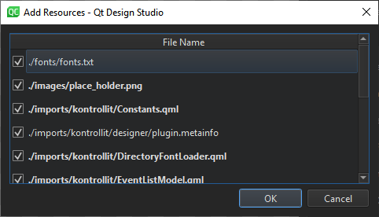

Packaging Applications
Note: In this section, you are using advanced menu items. These are not visible by default. To toggle the visibility of advanced menu items, see Customizing the Menu.
When you are ready to deliver your application to users or upload it to app stores, you can use Qt Design Studio to create suitable packages that contain all the necessary files, such as fonts, images, components, and modules.
Adding Resources to Packages
Qt Design Studio supports the Qt Resource System (QRC), which is a platform-independent mechanism for storing files in the application's executable. This is useful if your application always needs a certain set of files (icons, translation files, and so on) and you don't want to run the risk of losing the files.
To package your application, select File > Export Project > Generate QRC Resource File. Then select the files to package in the Add Resources dialog.

The dialog displays all the files listed in the project file (.qmlproject) and located in the project folder. Files that are listed in the project file are marked with bold text in the UI, to make it easy to identify the differences between the project file and the resource collection file.
When you select OK, Qt Design Studio creates a resource collection file (.qrc) in the project folder.
If you remove files from the project that you already added to the resource collection file, you can recreate the resource collection file to remove them also from there.
Embedding Resources into Applications
Alternatively, you can embed the resources into your application by selecting File > Export Project > Generate Deployable Package. Select the location for the .qmlrc file, and then select the files to embed in the Add Resources dialog.
When you select OK, Qt Design Studio creates a resource collection file (.qmlrc) in the location you selected.